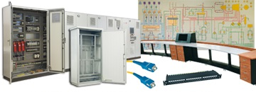
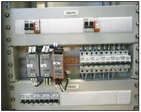

Telecomunication cabinets
FT and SUT telecommunication cabinets are made based
on of SZE2 and SZb enclosures. Their dimensions are
2000 x 600 x 600-800 mm. The typical configuration
includes front glazed door, a set of 19" mounting profiles
in front and rear of the cabinet, equipment protected
by IP 30 masking panels. Access is one-sided. Usually
it houses equipment for collecting information on the
state of the station, and transferring the information to
the master system. Cabinet configuration is tailored to
the station design and can always be adapted to the
customer's requirements – both in terms of dimensions
and equipment.
